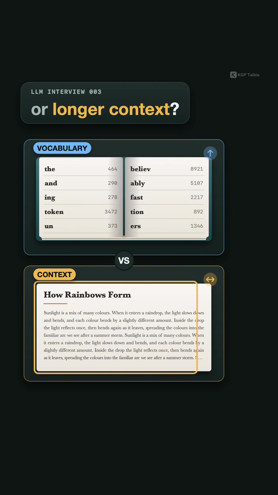
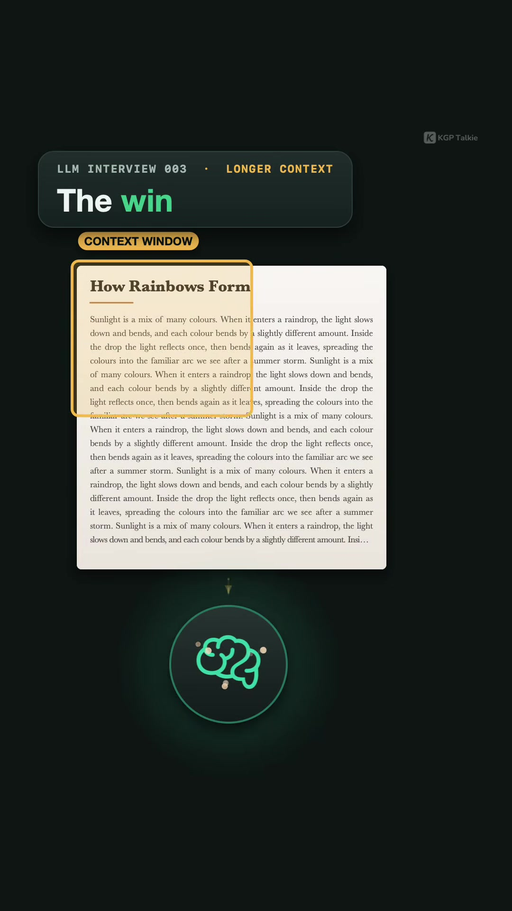
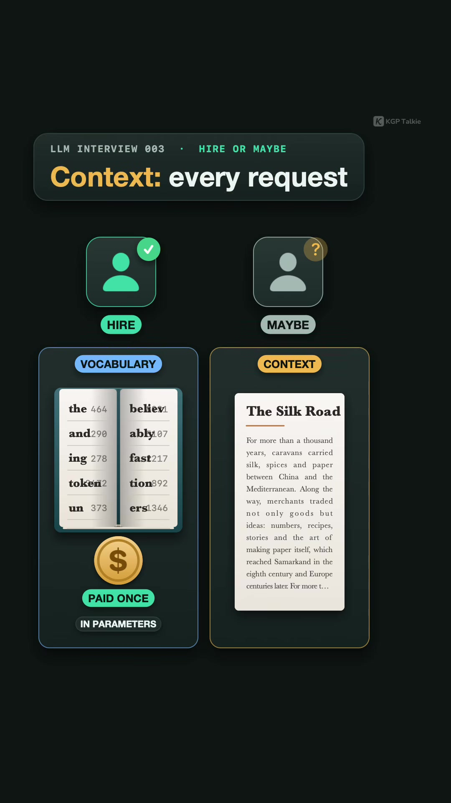

AI · System-Architecture
LLM System Design: Vocabulary Size vs. Context Window & KV Cache Memory Sizing
Key Takeaways
- The Fundamental Interview Question: When architecting an LLM, what is the mathematical trade-off between expanding the tokenizer vocabulary size ($V$) versus expanding the maximum context window ($L$)?
- Where the Cost is Paid: The vocabulary cost is paid once statically in model parameters (embedding and unembedding matrices). The context window cost is paid dynamically on every request in quadratic attention compute and linearly exploding Key-Value (KV) cache memory.
- Tokenizer Vocabulary Expansion: Going from 32K (Llama 2) to 128K (Llama 3) compresses token count by up to 15% (especially in non-Latin scripts like Hindi), reducing decode steps. However, it adds ~400 million float parameters to the input embedding table ($4096 \times 96,000$) and induces representation sparsity for rare tokens.
- The 16 GB Per-User KV Cache Trap: In Llama 3 8B, the KV cache consumes $\approx 128\text{ KB}$ per token. At full 128K context, storing the KV cache requires ~16 GB of VRAM for a single concurrent user before allocating model weights.
- The Million-Token Fallacy: Expanding vocabulary to 1M tokens with $d_{model}=4096$ would dedicate over 4.1 billion parameters (over 50% of an 8B model) solely to lookup tables, with catastrophic logit-softmax latency and diminishing compression returns.
The Core Architectural Dilemma
In AI engineering interviews and foundation model pre-training design doc reviews, junior candidates frequently answer: "Bigger is better, let's maximize both vocabulary and context window." Senior architects evaluate trade-offs based on memory allocation mechanics and operational runtime costs.

1. Expanding Tokenizer Vocabulary ($V$)
The Wins:
- Higher Compression Ratio: Subword algorithms (BPE, WordPiece, Unigram) merge frequent character combinations into single tokens. Sentences require fewer discrete tokens to represent.
- Fewer Autoregressive Decode Steps: Since text generates in fewer tokens, inference latency and generation costs drop proportionally.
- Multilingual Parity: Llama 2 (32K vocabulary) severely fragmented non-English languages (Hindi, Bengali, Arabic), requiring 3–5 tokens per word. Llama 3 (128K vocabulary) reduced Hindi token counts by up to 15–25%, significantly lowering API serving bills.
The Costs:
- Embedding & Projection Matrix Bloat: Each token requires an embedding vector of dimension $d_{model}$ in the input table and output LM head:
Added Parameters = ΔV × d_model = (128,000 - 32,000) × 4,096 ≈ 393,216,000 parameters
- Rare Token Representation Sparsity: Expanding to hundreds of thousands of tokens introduces long-tail rare tokens that appear infrequently during pre-training, resulting in under-optimized, noisy embedding representations.
- Final Logit Softmax Bottleneck: Computing $\text{Softmax}(h \cdot W^T)$ over $V$ logits at every token generation step increases memory bandwidth and GPU compute overhead.
2. Expanding Context Window Length ($L$)

The Wins:
- Direct ingestion of large codebases, multi-turn chat trajectories, and legal/financial document archives without chunking and lossy RAG retrieval.
The Costs & The 16 GB KV Cache Calculation:
Unlike vocabulary size, which is paid once in model weights, context window memory is instantiated dynamically on every user request.
KV Cache Memory per Request Formula:
Memory = 2 × N_layers × N_kv_heads × d_head × Context_Length × Bytes_per_element
| Architecture Variable | Llama 3 8B Value | Notes |
|---|---|---|
| Number of Layers ($N_{layers}$) | 32 | Transformer decoder blocks |
| KV Attention Heads ($N_{kv\_heads}$) | 8 | Grouped Query Attention (GQA) |
| Head Dimension ($d_{head}$) | 128 | $d_{model} / N_{q\_heads} = 4096 / 32$ |
| Precision Format | 16-bit (FP16/BF16) | 2 bytes per parameter |
| KV Cache per Token | 131,072 bytes (~128 KB) | $2 \times 32 \times 8 \times 128 \times 2$ bytes |
| 128K Context KV Cache | 16.38 GB VRAM | $128,000 \times 128\text{ KB}$ for 1 single user request |

3. The Million-Token Thought Experiment
Why not build a 1,000,000-token tokenizer vocabulary?
- At $d_{model} = 4096$, a 1M vocabulary requires: $$1,000,000 \times 4096 \times 2 \text{ bytes (FP16)} \approx 8.19 \text{ GB}$$ just to store the input embedding weights, accounting for over 4.1 billion parameters—more than 50% of an 8B model's capacity consumed by lookup tables rather than self-attention reasoning layers.
- Diminishing Returns: Zipf's law dictates that beyond ~100K–150K subwords, additional tokens correspond to ultra-specific n-grams with negligible corpus-wide compression benefits.
Summary Architecture Rule
"Grow the vocabulary while subword compression yields measurable throughput gains, and scale the context window strictly to the requirements of the inference task with KV cache quantization (FP8/INT4) or vLLM PagedAttention."
Original Source Reference
Instagram Reel: https://www.instagram.com/reel/DejSW8AP9nB/
Creator: @laxmikant.kgptalkie (Laxmi Kant | AI Engineer | KGP Talkie)
Series: LLM Interview 003 — Tokenizer vs Context Window